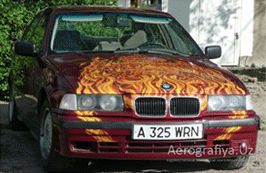
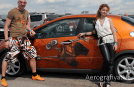

<!DOCTYPE html>
<html lang="en"></html>
<head>
  <meta charset="UTF-8"/>
  <link rel="stylesheet" href="../css/style.css"/>
  <title>BEHA</title>
</head>
<body>
  <header>
    <p>Aerografiya.uz</p>
    <p>художественная мастерская  Екатерины Ковшовой</p>
    <nav>
      <ul>
        <li>Главная</li>
        <li>Аэрография</li>
        <li>Портфолио</li>
        <li>Контакты</li>
      </ul>
    </nav>
  </header>
  <nav>
    <ul>
      <li>Все работы</li>
      <li>Авто-Мото</li>
      <li>Бытовая техника</li>
      <li>Интерьеры</li>
      <li>Мебель</li>
      <li>Музыкальные инструменты</li>
      <li>Оргтехника</li>
      <li>Реставрация</li>
      <li>Спортивное снаряжение</li>
    </ul>
  </nav>
  <section>
    <p>Авто-Мото</p>
    <p>Аэрография - наилучший способ передать индивидуальность характера автомобиля и его хозяина. Любые особенные предпочтения, интересы и замыслы. Это красиво и безусловно модно.</p>
    <div class="avto_moto">
      <p>BMW - огненная птица</p>
    </div>
    <div class="avto_moto">
      <p>WALL-E</p>
    </div>
  </section>
  <footer>
    <p>Студия аэрографии Екатерины Ковшовой</p>
    <p>Аэрография – это необыкновенный и современный способ подчеркнуть индивидуальность вашего автомобиля или же создать необычный авторский интерьер в вашей квартире или загородном доме. Художники нашей студии  разработают для вас индивидуальные эскизы и украсят аэрографией все, что вам заблагорассудится: от мотоцикла, автомобиля, потолков, стен, фасадов загородного дома и мебели (например, детских шкафчиков) до кухонных гарнитуров, оргтехники и даже ноутбуков! Все зависит лишь от смелости вашей фантазии!</p>
    <button>Все работы</button>
    <p>Все права защищены © Аэрография.uz<br/>Разработано в студии ArtOF.ru</p>
    <nav>
      <ul>
        <li>Главная</li>
        <li>Аэрография</li>
        <li>Портфолио</li>
        <li>Контакты</li>
      </ul>
    </nav>
  </footer>
</body>